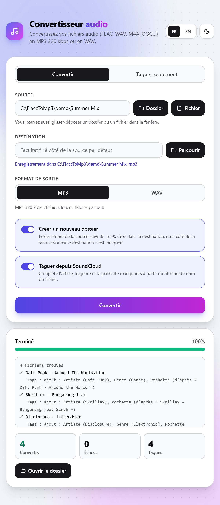

Où trouver des sons en bonne qualité, quel format choisir pour mixer, et comment les convertir en MP3 320 kbps ou en WAV sans rien perdre.
Un bon son commence par un bon fichier source. Un fichier de mauvaise qualité le reste, quel que soit le format dans lequel on le convertit ensuite.
Sur un téléphone, un casque bas de gamme ou une petite enceinte Bluetooth, un fichier médiocre passe inaperçu. Sur de bonnes enceintes, et encore plus sur une sono de club, le volume et la précision du système font ressortir chaque défaut.
Sur un fichier trop compressé, les cymbales et les hi-hats deviennent métalliques et flous, comme un souffle mouillé. C'est le premier défaut que l'on entend.
Le kick perd son attaque, les basses deviennent molles. Sur un gros caisson, la différence avec un bon fichier se sent physiquement.
L'espace stéréo se rétrécit, les réverbes et les queues de son deviennent granuleuses. Le morceau manque de profondeur.
Les transitions trahissent les mauvais fichiers. En enchaînant un morceau propre avec un morceau de mauvaise qualité, la chute de qualité s'entend immédiatement, même pour un public non averti.
Les effets amplifient les défauts. Changer le tempo avec le key lock, pousser un EQ ou ajouter un filtre fait ressortir les artefacts de compression.
Le volume ne pardonne pas. Un système de club joue fort et reproduit tout le spectre. Ce qui était caché sur une enceinte de salon devient évident.
Une question de crédibilité. Les ingénieurs du son et les organisateurs remarquent vite un DJ qui joue des fichiers dégradés.
Les sites et applications qui « téléchargent » un lien YouTube, SoundCloud ou Spotify annoncent souvent du MP3 320 kbps, voire du WAV. En réalité, ils ne peuvent pas donner mieux que ce que la plateforme diffuse en streaming.
L'audio est diffusé en AAC ou en Opus compressé, autour de 128 à 160 kbps. C'est cette version qui est récupérée.
L'écoute gratuite est diffusée en Opus à environ 64 kbps (ou en MP3 128 kbps), et au mieux en AAC 256 kbps avec l'abonnement Go+. Ce n'est jamais le fichier original de l'artiste : seul le bouton de téléchargement officiel le donne.
Beaucoup de « téléchargeurs Spotify » vont en réalité chercher le morceau sur YouTube et récupèrent donc la version YouTube, parfois même une autre version du titre.
La compression MP3 ou AAC supprime définitivement une partie du son. Convertir ce fichier en MP3 320 kbps ou en WAV augmente sa taille, mais ne recrée pas ce qui a été supprimé. C'est comme agrandir une photo floue : elle devient plus grande, pas plus nette.
Un « 320 kbps » ou un « WAV » peut donc cacher un fichier à 128 kbps. Le débit ou le format affiché ne prouve rien sur la qualité réelle.
Vérifier un fichier. Ouvrez-le dans un logiciel de spectrogramme gratuit comme Spek. Un vrai fichier sans perte montre du contenu jusqu'à 20 kHz et au-delà. Un fichier issu d'un MP3 à 128 kbps est coupé net vers 16 kHz, quel que soit son format.
Trois sources complémentaires : les téléchargements gratuits offerts par les artistes sur SoundCloud, le réseau Soulseek, et les sites comme Antra qui récupèrent la version sans perte des plateformes de streaming.
Beaucoup d'artistes, surtout pour les remixes, edits et bootlegs introuvables sur les plateformes de streaming, offrent leurs morceaux en téléchargement gratuit.
Le téléchargement donne le fichier que l'artiste a mis en ligne, souvent un WAV, un AIFF ou un FLAC, et non le flux compressé de l'écoute en ligne.
C'est l'artiste qui active le téléchargement sur son morceau. Un compte SoundCloud gratuit suffit pour en profiter.
Ces morceaux ne sont souvent sur aucune autre plateforme, donc introuvables avec Antra.
Repérez les morceaux offerts : leur titre ou leur description mentionne souvent Free Download ou Free DL.
Téléchargement direct : connectez-vous à SoundCloud (un compte gratuit suffit), puis cliquez sur Télécharger le fichier sous la forme d'onde du morceau, ou dans le menu … (Plus). Si le bouton n'apparaît pas, l'artiste n'a pas autorisé le téléchargement.
Lien externe : parfois un bouton Free Download ou Buy renvoie vers une page de l'artiste, qui demande en général de le suivre ou de partager le morceau avant de donner le fichier.
La qualité dépend de l'artiste. Si le fichier mis en ligne est déjà un MP3, le convertir à nouveau ne l'améliorera pas : gardez-le tel quel et utilisez l'onglet Taguer seulement du convertisseur.
Soulseek est un réseau de partage de fichiers entre particuliers, très utilisé par les passionnés de musique et les DJ. Chaque utilisateur partage sa propre bibliothèque, ce qui en fait une mine pour les titres rares, anciens ou underground.
Vous installez un logiciel client, vous cherchez un titre, et vous le téléchargez directement depuis l'ordinateur d'un autre utilisateur.
Tout dépend de celui qui partage : FLAC, WAV, AIFF, MP3 320 ou MP3 de mauvaise qualité. Les résultats affichent le format et le débit.
Les utilisateurs attendent que vous partagiez aussi. Certains refusent les téléchargements aux comptes qui ne partagent rien.
Installez un client : SoulseekQt, le client officiel, ou Nicotine+, une alternative libre.
Créez un compte au premier lancement en choisissant un nom d'utilisateur et un mot de passe.
Partagez un dossier de votre musique dans les réglages pour être bien accueilli sur le réseau.
Cherchez un titre et privilégiez les résultats en FLAC ou en WAV, de préférence chez des utilisateurs avec une bonne vitesse et une file d'attente courte.
Vérifiez le fichier reçu avec un spectrogramme (voir les pièges) : un FLAC partagé peut très bien venir d'un MP3.
Antra est un site web. Vous y collez le lien d'un morceau ou d'une playlist Spotify, Apple Music, Amazon Music, Tidal, Qobuz ou Deezer : il retrouve la version sans perte disponible sur ces services et vous la remet sous forme de fichier.
Pas besoin d'abonnement aux plateformes. Antra se charge de trouver la source.
En qualité CD (16 bits / 44,1 kHz) ou supérieure, jusqu'à 24 bits / 192 kHz selon la source.
Une playlist arrive sous forme d'archive .zip, que le convertisseur lit directement.
Copiez le lien de la playlist ou du morceau depuis Spotify, Apple Music, Amazon Music, Tidal, Qobuz ou Deezer (menu Partager → Copier le lien).
Ouvrez antra.hoshi.cfd, cliquez sur Enter, puis connectez-vous (Log in) ou créez un compte gratuit (Sign up).
Collez le lien et validez. Antra affiche la liste des pistes et la qualité trouvée pour chacune.
Gardez le format FLAC et lancez le téléchargement.
Enregistrez l'archive .zip dès qu'elle est prête (bouton Save file). Inutile de la décompresser.
Ne tardez pas à enregistrer l'archive. Une fois les morceaux chargés par Antra, le lien de téléchargement de l'archive expire rapidement. Restez sur la page pendant la préparation et enregistrez le fichier dès qu'il est disponible, sinon il faudra relancer le téléchargement.
Évitez l'option MP3 d'Antra. Le fichier obtenu n'est pas forcément un vrai MP3 320 kbps : il peut s'agir d'un AAC 256 kbps reconverti en MP3 320. Or passer d'un format compressé à un autre dégrade le son. Prenez le FLAC et laissez le convertisseur produire le MP3 à partir de la source sans perte.
Soutenez Antra sur sa page Patreon, qui affiche les formules et les tarifs en vigueur.
Récupérez la clé de 30 jours que vous recevez en retour.
Dans Antra, cliquez sur I have a key, collez la clé puis cliquez sur Activate. La clé s'active sur ce navigateur uniquement.
Les trois formats peuvent sonner très bien, à condition de partir d'une bonne source. Ce qui change, c'est la taille des fichiers, la compatibilité avec le matériel, et l'usage que vous en faites.
Sans perte, mais compressé : 30 à 50 % plus léger qu'un WAV pour exactement le même son. Parfait comme source à garder pour reconvertir plus tard. Pour un DJ, il n'apporte pratiquement rien, et il n'est pas lu par tous les lecteurs : les CDJ-2000NXS et modèles antérieurs, encore courants en club, ne le lisent pas (support à partir du CDJ-2000NXS2).
Sans perte et non compressé, lu par les lecteurs et logiciels de DJ en 16 ou 24 bits. Utile si vous jouez sur de très gros systèmes son bien réglés, où le moindre détail compte. En contrepartie, les fichiers sont très lourds, et les CDJ ont une limite de fréquence (voir ci-dessous).
Compressé, mais à ce débit la différence avec un fichier sans perte est très difficile à entendre en conditions réelles. Léger, lu partout, idéal pour une clé USB. À condition qu'il soit converti depuis une source sans perte.
| Format | Taille relative | Morceau de 5 min | 500 morceaux |
|---|---|---|---|
| MP3 320 kbps | ×1 | ≈ 12 Mo | ≈ 6 Go |
| FLAC 16 bits / 44,1 kHz | ≈ ×2,5 | ≈ 30 Mo | ≈ 15 Go |
| WAV 16 bits / 44,1 kHz | ≈ ×4,4 | ≈ 53 Mo | ≈ 26 Go |
| WAV 24 bits / 96 kHz | ≈ ×14 | ≈ 173 Mo | ≈ 86 Go |
Tailles calculées à partir des débits. Celle du FLAC est une moyenne : elle varie selon la musique.
Des WAV lisibles sur tous les CDJ. Les CDJ lisent le WAV jusqu'à 96 kHz (CDJ-2000NXS2, CDJ-3000), et seulement jusqu'à 48 kHz pour les modèles plus anciens. Convertisseur audio ramène donc automatiquement les sources Hi-Res (88,2, 96 ou 192 kHz) à 48 kHz, en gardant le 24 bits. Les sources en 44,1 ou 48 kHz restent inchangées, et le MP3 est de toute façon à 48 kHz maximum.
Pour caler deux morceaux, on accélère ou on ralentit souvent l'un d'eux. Avec le Master Tempo (ou key lock), le lecteur change la vitesse sans changer la tonalité. Il doit pour cela découper et recomposer le son en temps réel, et c'est là que le format fait une différence.
L'algorithme travaille sur un son qui contient déjà les petits défauts de la compression. En l'étirant, il les amplifie : aigus plus métalliques, attaques du kick et des percussions moins nettes, son légèrement « chorus » ou granuleux.
L'algorithme part d'un signal complet et propre. Le résultat reste plus naturel, et les défauts du time-stretching apparaissent plus tard, pour des écarts de tempo plus grands.
Pour de petits ajustements (moins de 6 % d'écart de tempo), un bon MP3 320 tient bien. Si vous jouez souvent des morceaux loin de leur tempo d'origine, avec le Master Tempo activé, préférez le WAV.
La bonne méthode. Gardez vos fichiers sans perte (FLAC ou WAV) comme archive, puis créez à partir d'eux la version dont vous avez besoin : MP3 320 pour la clé de tous les jours, WAV pour les grandes dates. Ne convertissez jamais un fichier compressé vers un autre format compressé.
Convertisseur audio transforme vos fichiers en MP3 320 kbps ou en WAV, et complète les tags manquants. L'application tourne sur votre ordinateur, dans sa propre fenêtre : vos fichiers ne sont envoyés sur aucun serveur.
Rendez-vous sur la dernière version et téléchargez le fichier de votre ordinateur : SoundConverter.exe pour Windows, SoundConverter-macOS-arm64.zip pour un Mac Apple Silicon, SoundConverter-macOS-x86_64.zip pour un Mac Intel.
Il n'y a rien à installer, FFmpeg est inclus. Sur Mac, double-cliquez sur le .zip pour obtenir l'application.
Au premier lancement, l'application n'étant pas signée, votre système affiche un avertissement :
Lancez SoundConverter. La fenêtre s'ouvre après quelques secondes.
Source : cliquez sur Fichier pour une archive .zip d'Antra ou un seul morceau, ou sur Dossier pour un dossier de fichiers (Soulseek, SoundCloud). Vous pouvez aussi les glisser dans la fenêtre.
Destination : choisissez un dossier, ou activez Créer un nouveau dossier. Album.zip donnera alors un dossier Album_mp3 ou Album_wav placé à côté de la source.
Format de sortie : choisissez MP3 (320 kbps) ou WAV. Le WAV est en 24 bits si la source l'est, sinon en 16 bits, et les sources Hi-Res sont ramenées à 48 kHz pour être lues par tous les CDJ. Le choix est mémorisé.
Option : activez Taguer depuis SoundCloud pour compléter les tags manquants : le titre et l'artiste d'après un nom de fichier Artiste - Titre, puis l'artiste, le genre et la pochette depuis SoundCloud. Les tags déjà présents ne sont jamais écrasés.
Cliquez sur Convertir. La progression et le journal s'affichent piste par piste. Annuler arrête tout en conservant les fichiers déjà convertis.
À la fin, le récapitulatif indique les fichiers convertis, en échec et tagués. Ouvrir le dossier affiche vos fichiers, Réessayer les échecs relance uniquement ceux qui ont échoué.
Des WAV bien tagués. Les tags et la pochette des WAV sont écrits dans un bloc ID3, que lisent les logiciels de DJ comme rekordbox ou Serato.
Déjà des MP3 ou des WAV ? L'onglet Taguer seulement complète leurs tags sans rien convertir.
Le convertisseur ne rend pas la qualité perdue. Un AAC ou un Opus converti en MP3 ou en WAV garde sa qualité d'origine : le journal signale ces sources compressées, et les MP3 ne sont pas acceptés du tout. Partez toujours d'une source sans perte (FLAC, WAV, AIFF, ALAC).

Le format et le débit affichés ne suffisent pas. Ouvrez le fichier dans Spek (gratuit, Windows, Mac et Linux) : un vrai fichier sans perte montre du contenu jusqu'à 20 kHz et au-delà, un MP3 320 s'arrête vers 19-20 kHz, et un fichier issu d'un MP3 128 kbps est coupé net vers 16 kHz.
Non. Ce que la compression a supprimé est perdu définitivement. Le WAV obtenu est plus lourd mais sonne exactement comme le MP3 d'origine. C'est pourquoi Convertisseur audio n'accepte pas les MP3, et signale dans le journal les autres sources compressées (AAC, Opus…).
Inutile, et même contre-productif : chaque nouvel encodage compressé dégrade un peu plus le son. Gardez le MP3 tel quel et utilisez l'onglet Taguer seulement si vous voulez compléter ses tags.
Oui, au bit près. Le FLAC est simplement compressé sans perte, comme un fichier ZIP. La différence porte sur la taille (le FLAC est 30 à 50 % plus léger) et la compatibilité avec les lecteurs.
L'AIFF est l'équivalent du WAV chez Apple : même qualité, même taille. Le convertisseur l'accepte en entrée, mais produit du MP3 ou du WAV.
Non. Pour de la musique déjà masterisée, la qualité CD (16 bits / 44,1 kHz) suffit. Les fichiers Hi-Res sont beaucoup plus lourds, et au-delà de 96 kHz ils ne sont pas lus par les CDJ. Si vous en avez, Convertisseur audio les ramène à 48 kHz en WAV.
Le plus souvent, sa fréquence est trop élevée : les CDJ-2000NXS2 et CDJ-3000 lisent le WAV jusqu'à 96 kHz, les modèles plus anciens jusqu'à 48 kHz. Passez-le dans Convertisseur audio avec la sortie WAV : les fichiers au-delà de 48 kHz sont ramenés à 48 kHz. Pensez à choisir un autre dossier de destination que celui du fichier d'origine.
Les CDJ-2000NXS et modèles antérieurs ne lisent pas le FLAC. Convertissez-le en WAV ou en MP3 320 avec Convertisseur audio.
Non, il faut seulement créer un compte gratuit. Le quota est de 5 playlists, 10 albums et 100 morceaux par jour. Une clé supporter de 30 jours, obtenue en soutenant Antra sur Patreon, lève ces limites (voir les limites).
Non. Il suffit de copier le lien public du morceau ou de la playlist.
Antra limite chaque téléchargement à 100 pistes. Téléchargez la première partie, puis utilisez Download next chunk pour la suite. Vous obtenez plusieurs archives, à convertir l'une après l'autre.
Le lien expire rapidement après la préparation de l'archive. Relancez le téléchargement sur Antra et enregistrez l'archive dès qu'elle est prête.
Oui, Antra accepte un fichier de playlist au format CSV, M3U, XSPF ou JSPF via Import a playlist file.
L'artiste n'a pas autorisé le téléchargement direct. Regardez la description ou le bouton Buy, qui renvoient parfois vers un lien de téléchargement gratuit. Sinon, le morceau n'est pas disponible gratuitement.
Oui, le réseau et les clients SoulseekQt et Nicotine+ sont gratuits.
Vous êtes dans la file d'attente de l'autre utilisateur, ou il est hors ligne. Choisissez un autre résultat, de préférence chez quelqu'un qui a une file courte et une bonne vitesse. Partager vos propres fichiers aide aussi.
MP3 dans la plupart des cas : léger et lu partout. WAV pour les très gros systèmes son ou si vous modifiez beaucoup le tempo. Voir la comparaison des formats.
Elle est gratuite et son code source est public sur GitHub. Windows, macOS et certains antivirus l'avertissent parce qu'elle n'est pas signée (un certificat de signature est payant), pas parce qu'elle est dangereuse. Les fichiers de chaque version sont générés automatiquement par GitHub à partir de ce code.
Ouvrez Réglages Système → Confidentialité et sécurité, descendez jusqu'au message concernant SoundConverter et cliquez sur Ouvrir quand même. Sur macOS 14 et antérieurs, un clic droit sur l'application puis Ouvrir suffit.
Non. Avec un ZIP, tous les fichiers audio sont pris, quelle que soit la profondeur des dossiers, et écrits dans un seul dossier de sortie.
Avec un dossier comme source, seuls les fichiers placés directement dedans sont lus. Convertissez chaque sous-dossier séparément, ou compressez le tout en ZIP : dans une archive, tous les fichiers sont pris.
FLAC, WAV, AIFF, M4A/ALAC, AAC, OGG, Opus, WMA, APE, WavPack et les autres formats que FFmpeg sait lire.
Dans le dossier de destination choisi. Avec Créer un nouveau dossier, dans un dossier …_mp3 ou …_wav créé dans la destination, ou à côté de la source si aucune destination n'est indiquée. Ouvrir le dossier l'affiche à la fin.
Oui, ils sont recopiés dans le fichier converti, y compris en WAV (dans un bloc ID3 lu par rekordbox et Serato). L'option SoundCloud ne fait que compléter ce qui manque, sans jamais écraser un tag existant.
La recherche SoundCloud compare les cinq premiers résultats et garde le plus proche. Un titre très court ou très courant peut malgré tout tomber sur un autre morceau du même nom. Renommez le fichier sous la forme Artiste - Titre pour aider la recherche, ou corrigez les tags dans votre logiciel de DJ.
Seulement pour les tags SoundCloud. La conversion fonctionne hors ligne.
Le journal indique la raison donnée par FFmpeg, souvent un fichier incomplet ou endommagé. Réessayer les échecs relance uniquement les fichiers concernés. Si l'échec persiste, retéléchargez le fichier.
Les suivantes reçoivent un numéro : 01.mp3, 01_2.mp3, 01_3.mp3. En revanche, les fichiers du même nom déjà présents dans le dossier de sortie sont écrasés.
Les fichiers sont convertis en parallèle, un par cœur de processeur. La recherche des tags SoundCloud, qui passe par Internet, ajoute un peu de temps par morceau.
Les boutons FR / EN en haut à droite changent la langue, et le bouton soleil/lune bascule entre mode clair et mode sombre. Les deux choix sont mémorisés.